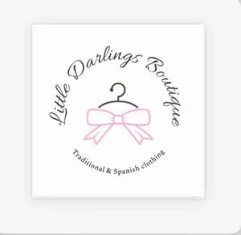

Trade Mark Journal No.2025/032 8 August 2025
UK00004200819 9 May 2025 (25,35)

- Class 25
- Babies' pants [clothing]; Childrens' clothing; Children's clothing; Girls' clothing; Boys' clothing; Babies' clothing; Baby clothes; Clothing for children; Infants' clothing; Clothing for babies; Clothing for infants; Infant clothing; Clothing for men, women and children; Trousers for children; Playsuits [clothing]; Headbands [clothing]; Headbands for clothing; Swim wear for children; Dresses for infants and toddlers; One-piece clothing for infants and toddlers; Socks for infants and toddlers; Baby layettes for clothing; Overalls for infants and toddlers; Beach clothing; Layettes [clothing]; Clothing layettes; Knitted baby shoes; Shoes for infants; Baby shoes; Sandals and beach shoes; Beach shoes; Dress shoes; Infants' shoes; Baby boots; Baby sandals; Bootees (woollen baby shoes); Baby pants; Baby bodysuits; Baby bottoms; Baby tops; Infant wear; Children's wear; Infants' trousers; Dresses; Smocks; Romper suits; Knitwear [clothing]; Infants' footwear; Embroidered clothing; Knitted clothing; Children's footwear; Clothes; Clothing; Jackets (Stuff -) [clothing].
- Class 35
- Retail services connected with the sale of clothing and clothing accessories; Online retail store services in relation to clothing; Online retail store services relating to clothing; Online retail services relating to clothing; Retail store services in the field of clothing; Online retail services relating to jewelry; Mail order retail services for clothing; Retail services in relation to clothing accessories; Mail order retail services connected with clothing accessories; Retail services relating to clothing; Retail services in relation to clothing; Retail services in relation to fashion accessories; Retail services in relation to footwear; Retail services in relation to bags; Presentation of companies on the Internet and other media; Provision of advertising space on electronic media; Communication media (Presentation of goods on -), for retail purposes; Retail purposes (Presentation of goods on communication media, for -); Presentation of goods on communications media, for retail purposes; Advertising and marketing services provided by means of social media; Advertising via electronic media and specifically the internet; Online advertising on computer networks; Organisation of promotions using audiovisual media; Organisation of promotions using audio-visual media; On-line advertising on computer communication networks; On-line advertising on computer networks; Sales promotion using audiovisual media; Media relations services; Promotional marketing services using audiovisual media; Advertising, including on-line advertising on a computer network; On-line advertising on a computer network; Promoting the goods and services of others via computer and communication networks; Presentation of goods on communication media, for retail purposes; Online advertising on a computer network; Advertising services relating to clothing; Advertising, promotional and public relations services; Developing promotional campaigns for business; Advertising in the popular and professional press; Promotion [advertising] of business; Brand positioning; Internet marketing; Promoting the sale of fashion goods through promotional articles in magazines; Online advertising via a computer communications network; On-line advertising and marketing services; Providing consumer product information via the Internet; Marketing; Providing business information in the field of social media; Digital marketing; Advertising and marketing; Advertising and marketing services; Advertising, marketing and promotion services; Marketing, advertising and promotion services; Online marketing; Marketing services; Mail order retail services for clothing accessories; Import and export services.
Little Darlings Boutique LTD